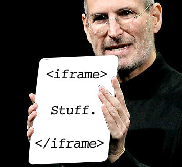

Continuação HTML - Multimidia
Created by Fernando Marques
Avaliação de um minuto
(...) espero que as avaliações não cobrem decorebas de tags, pois nosso tempo de prática em aula é extremamente curto e fora de aula temos outras matérias para nos dedicar (...)
Revisão
- Tabelas: Elementos table, caption, tr, th e td
- Em td/th temos rowspan e colspan
- Listas Ordenadas (ol) e listas não ordenadas (ul)
- Listas Ordenadas:type, start, reversed
<table>
<tr>
<th>Nome</th>
<th>Sobrenome</th>
<th>Apelido</th>
</tr>
<tr>
<td>Bruce</td>
<td>Wayne</td>
<td>Batman</td>
</tr>
<tr>
<td>Peter</td>
<td>Park</td>
<td>Spiderman</td>
</tr>
</table>
<ul>
<li> Elemento 1</li>
<li> Elemento 2</li>
<li> Elemento 3</li>
</ul>
<ol>
<li> Elemento 1</li>
<li> Elemento 2</li>
<li> Elemento 3</li>
</ol>
Aula de Hoje
- frames e iframes
- Embed Video
- Embed PDF
HTML Pré-Histórico
Antes do HTML5, browsers só conseguiam exibir, de forma nativa, um tipo de mídia.


A era dos Plugins
- 1991: Apple Quicktime (.mov)
- 1994: MIDI (background music)
- 1995: RealAudio (.ra, .ram)
- 1997: RealVideo (H.263)
- 1998: Windows Media Player
- 1999: Quicktime for Windows (.mov, .mp3, .mp4, .swf)
- 2002: Macromedia Shockwave Flash (.swf)
- 2007: Microsoft Silverlight (flash, vid, etc.)
Suporte HTML para plugins
- Para colocar um arquivo que o plugin usaria
- embed - Introduzido no Netscape 2.0
- object - Adicionado no html 4.01. Permitia configurações mais complexas
O Elemento embed
Deve especificar src e type
<embed type="application/x-shockwave-flash"
src="img/zombie_walk.swf"/>
O Elemento Object
Deve possuir um ou mais filhos param. Param dá informação ao navegador sobre o que é embed
<object width="300" height="150">
<param name="movie" value="zombie_walk.swf"/>
<param name="bgcolor" value="white"/>
</object>
Como era feito pelo Youtube
<object width="480" height="385">
<param name="movie"
value="http://www.youtube.com/v/ddm5bbeqHVA"/>
<param name="allowFullScreen"
value="true"/>
<param name="allowscriptaccess"
value="always"/>
<embed src="http://www.youtube.com/v/ddm5bbeqHVA"
type="application/x-shockwave-flash"
allowscriptaccess="always"
allowfullscreen="true" width="480" height="385"/>
</object>Código do Slide Anterior
Quais os problemas dos plugins?
- Má experiencia para o usuário (pop-ups)
- Difícil fazer plugins funcionarem juntos (costumavam travar)
- Problemas de segurança (malware)
- Não funcionava em todos lugares (flash no ipad)
Frames e frameset
- Não são mais suportados por html5
- Servia para colocar 'subpáginas' dentro da página principal
- Continha os elementos frameset e frame
- Exemplo
IFrame

<iframe src="http://fernandomarques.github.io/faesa">
Seu navegador não suporta iframe
</iframe>
- É um frame 'inline', ou seja, não precisa do frameset
- Serve para colocar outro elemento dentro do html
- Podemos colocar um texto entre as tags iframe para lidar com navegadores que não suportem iframe
- Não pertence a Apple!
Exemplo
IFrame - atributos
- height e width
- name
- src
- srcdoc
IFrame - Sandbox
O que é um sandbox?

- Html5 adicionou a opção de sandbox
- Um dos problemas de trabalhar com iframe era vulnerabilidade
- allow-forms
- allow-pointer-lock (api)
- allow-popups
- allow-same-origin
- allow-scripts
- allow-top-navigation
Desvantagens de utilizar iFrame
- Não é muito amigável
- Não existe um acesso fácil ao conteúdo do frame
- Em alguns navegadores podem ser mais difíceis de carregar
- Complica acessos a árvore DOM
- A melhor alternativa são linguagens server-side
- PS.: Pode ser utilizado como elemento invisível para carregar outras coisas (gmail faz isso)
Multimídia nativa
Em HTML5 podemos adicionar áudio e vídeo de forma nativa. Se o navegador suportar ele vai mostrar os controles do vídeo
Vantagens:
- Não é necessário o uso de plugins
- Melhor Performance
- Nativo e com controles de acessibilidade
Podemos adicionar um video do youtube como embed
<iframe width="420" height="345"
src=""https://www.youtube.com/embed/nKIu9yen5nc?ecver=2">
</iframe>
Video
- A tag video permite adicionar um video dentro de uma página web
- Os formatos suportados são: mp4, WebM e Ogg
Video - Atributos
- autoplay
- controls
- height e width
- loop
- muted
- poster
- preload
- src
Audio
- Assim como video, também existe uma tag para audio
- Formatos: mpeg, ogg e wav
- Tag nova no html5
Exemplo e atributos
- autoplay
- controls
- loop
- muted
- preload
- src
Codecs
- Áudio: mp3, aac e ogg
- Vídeo Container: mp4, ogv, webm
- Vídeo Codec: H.264, Theora, VP8
Multimidia Sources
Como não existem formatos que funcionem em todos navegadores, podemos disponibilizar mais de um source
<video height="200" controls="">
<source src="chrome-japan.webm" type="video/webm"/>
<source src="chrome-japan.mp4" type="video/mp4"/>
<source src="chrome_japan.ogv" type="video/ogg"/>
</video>Adicionando PDF
- Podemos usar a tag embed
-
Exemplo PDF
Exercícios
- Sabemos como usar links, videos, tabelas e listas
- Faça uma página que mostre vários documentos (por exemplo, vários links para vídeos de youtube separados por estilo)
- Tentem usar a maior quantidade de elementos que já aprendemos, o importante é treinar!
- Logo logo, vamos deixar as páginas bonitas, não se preocupem
- Avaliação de Um Minuto